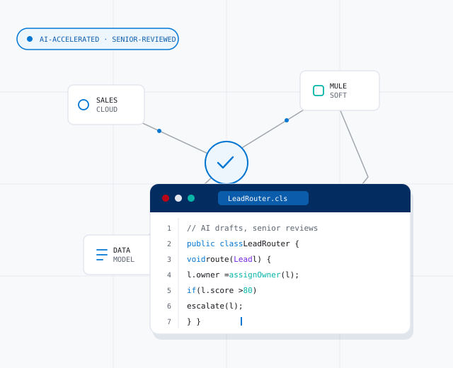
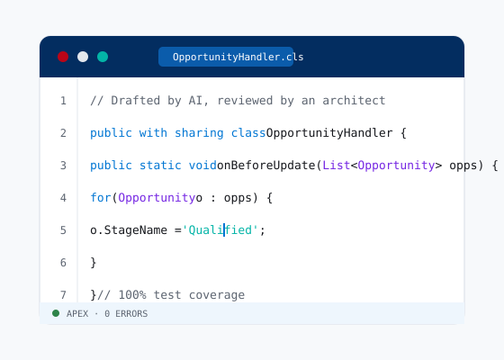
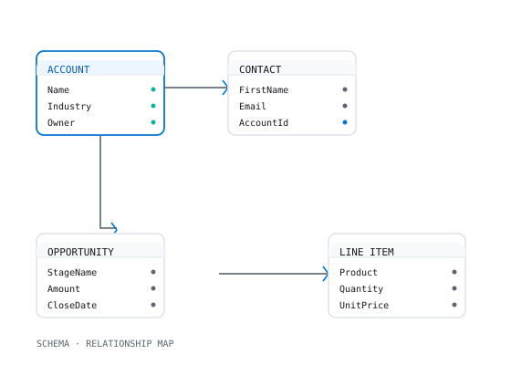

Salesforce delivery, built for how AI actually works.
Architecture, custom development, Agentforce, and managed support — engineered by certified architects and shipped with AI as leverage, not a shortcut.
Architecture & advisory
Org assessment, technical roadmaps, and scalable data models before a single line of code ships. We map the failure modes early, so the build has a foundation that holds as you scale rather than one you have to unwind later.
- Org health & technical debt assessments
- Solution & technical architecture design
- Scalable data-model design
- Integration architecture
- Technical roadmaps & release strategy
- Governance / center-of-excellence setup
Related work: Salesforce–Xero integration →


Custom development
Apex, LWC, and Flow builds engineered by senior developers, AI-accelerated, human-reviewed line by line. The tooling removes the boilerplate; correctness, maintainability, and the merge decision stay with a person who understands the consequences.
- Apex triggers & batch jobs
- Lightning Web Components (LWC)
- Flow automation
- REST/SOAP & platform-event integrations
- Automated test coverage
- CI/CD & release management
Related work: Patient onboarding portal → · Field Service scheduling →
Agentforce & AI integration
AI agents, grounded actions, and automation designed to hold up in production, not just a demo. We scope agents to your real business rules, wire in guardrails, and test against the edge cases that decide whether an agent is trustworthy.
- Agentforce agent design & grounded actions
- Prompt & action engineering
- Einstein / LLM integrations
- Guardrails, testing & evaluation
- Data grounding & security review
- Production monitoring
Related work: See all case studies →


Managed support & optimization
Ongoing releases, performance tuning, and org health, so nothing rots after launch. A senior engineer stays close to your org — shipping enhancements, paying down technical debt, and catching problems before they reach your users.
- Ongoing release management
- Performance tuning & org optimization
- Proactive org-health monitoring
- Enhancements & bug fixes
- Technical-debt reduction
- SLA-based support
Your Salesforce org, engineered for what's next.
Talk to a senior architect about architecture, custom development, an Agentforce build, or ongoing support — scoped before you commit.